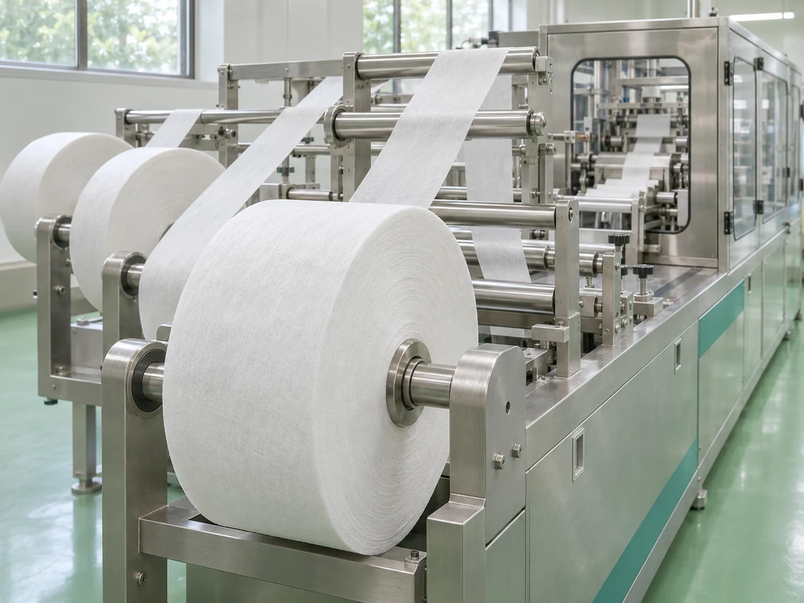
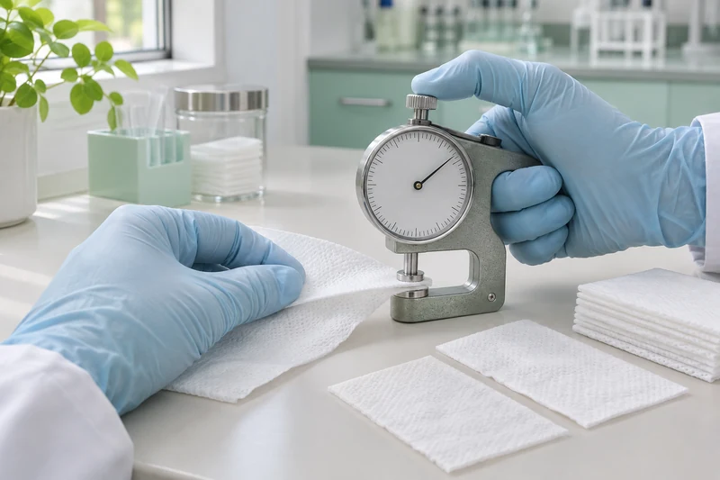
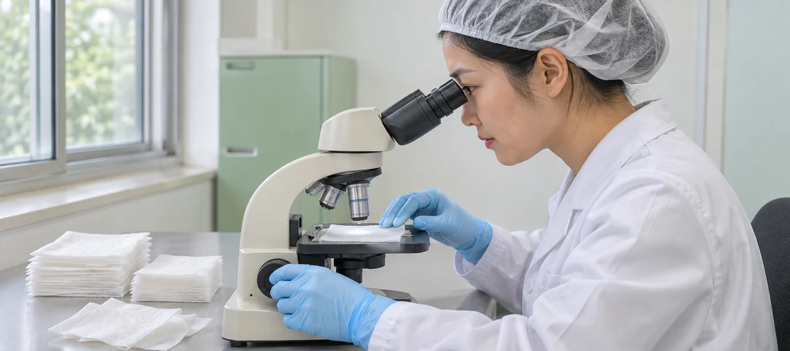
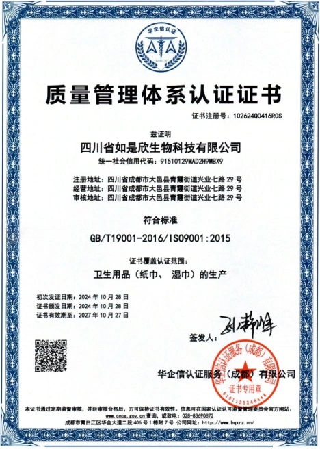
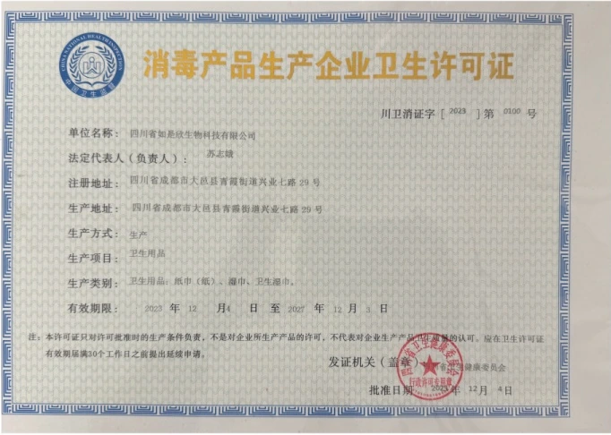

Automated production
Six wet wipe lines and two dry wipe lines handle formats ranging from individual sachets to multi-packs, including 80-count baby wipes.
At Dayi Industrial Park in Chengdu, our factory combines automated wet and dry wipe lines with an in-house lab. We produce single sachets, multi-packs and family packs for private-label customers.
See our partners
Fabric unwinding Fabric texture
Fabric texture
Thickness testingSix wet wipe lines and two dry wipe lines handle formats ranging from individual sachets to multi-packs, including 80-count baby wipes.

Our technicians use dedicated lab space and incubation equipment to monitor quality during production.
In 2023, Rushixin received its hygiene licence to manufacture disinfection products. In 2024, our quality management system earned ISO 9001:2015 certification for tissue and wet wipe production.



Talk to Su Hong about how your wipes will be used, the material, the pack size and your order quantity.